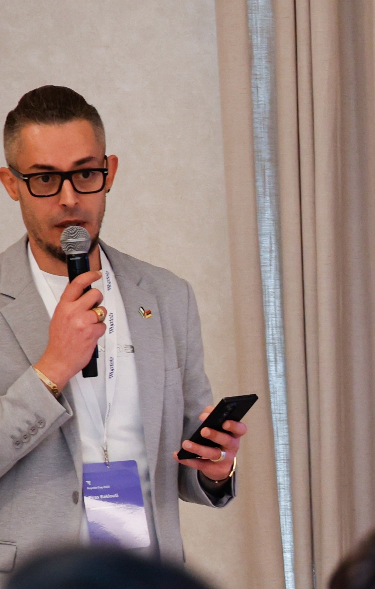

From customer to company
Sales, market development and customer relationships inform my business decisions.
 Firas Baklouti
Firas Baklouti
About · Firas Baklouti
From hands-on technical work to international executive leadership — a career developed inside businesses, across markets and through responsibility for results.

My journey
My career did not begin in a boardroom. It began with electronics, automotive systems and practical problem-solving, followed by direct sales and the challenge of building a career in Europe.
Since 2012, I have worked in international telematics and technology businesses, moving through commercial and functional leadership into executive responsibility.
Today I work across Europe, the Middle East, Africa and Asia, adapting decisions to the realities of each market.
Experience that connects disciplines
Sales, market development and customer relationships inform my business decisions.
Experience across sales, marketing, product and general management.
Building relationships and operating across different markets and cultures.
European foundations
Consecutive CeBIT appearances in Hannover, 2015–2017, form part of a longer record of commercial and industry engagement across markets.
Explore the professional journey ↗